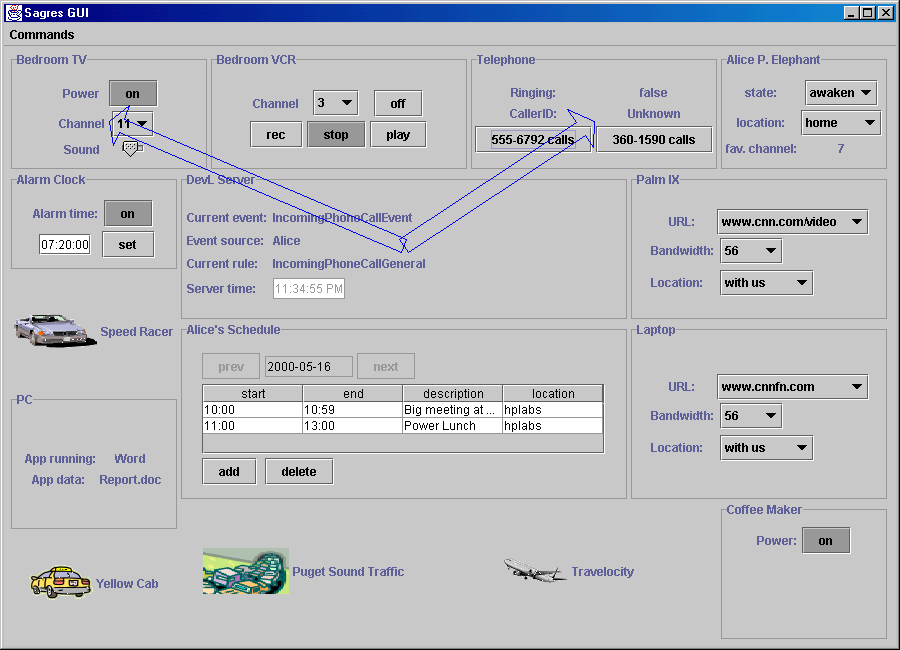
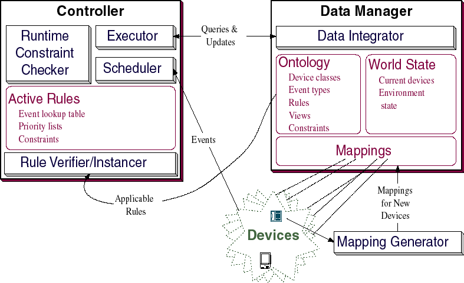

Self-Organizing Data Sharing Communities with Sagres
Zachary Ives, Alon Levy, Jayant Madahavan, Rachel Pottinger,
Stefan Sariou, Igor Tatarinov, Eva Jaslikowska, Wai Tak Theodora Yeung
Context
Our context is that a
multitude of devices are already connected via a wireless network; the
devices communicate via different XML vocabularies. Our goal is to
create an environment into which devices can automatically integrate,
interact, and exchange data with each other.
Typical Scenario
Alice, an on-site corporate consultant, lives in Seattle. Most
mornings, she must fly to a client's site and discuss strategies with
them. She has a daily schedule of meetings at the site, and a number
of events she would like to schedule.
Sagres automatically and invisibly performs a number of tasks for her.
First, it schedules a plane flight that will allow her to arrive on
time, taking into account the time required to get to the client's
site via taxi from the airport. Sagres also estimates Seattle morning
traffic times to determine how long it will take her to get to SeaTac
airport.
On most days, Alice drives to the airport. However, if her car is in
the repair shop, Sagres will call a taxi for her. On the way to work,
Alice likes to download the morning's news for viewing on the plane
flight. She has two different portable devices, a laptop with
Richochet wireless modem service, and a Palm VII PDA (also with
wireless service). Depending on which device she has, and how fast
the current connection is, the portable device will automatically
download CNN video clips, text articles, or web clippings.
When Alice is home, if any of her clients call on the telephone, the
television is automatically shut off , the VCR is activated to record
the current program, and Alice's desktop PC automatically looks up the
information she has on the client.
Demo Screenshot

Methodology
- Provide a global model of the environment and all devices and
objects within it.
We first must be able to define what the devices are; this includes
modeling their attributes, query capabilities, and ability to be
updated by the system.
-
Define interactions between combinations of devices using a
declarative, event-based XML-oriented language.
After the devices have been defined, we must be able to define what interactions occur between the devices. We must be able to describe what events happen, what rules must be followed after their creation, views over the data, and what constraints we have over the world as a whole.
-
Provide a mean of specifying priorities and orderings of interactions and of controlling allocation of resources.
In defining the rules, we must ensure that we have a set of priorities
and orderings of interactions that allow us to define what should
happen when conflicts arrive. The priorities must be structured such
that:
- Priorities can be easily expressed so that users of the system can add new rules
- Adding in new priorities will not require restructuring the entire priority system
- The priorities make sense in the real world
- Automatically learn mappings to ease the addition of new devices into Sagres.
The devices are guaranteed to be able to communicate via XML, but there is no reason to assume that they have the same vocabulary as the Sagres server (e.g., they may have different DTDs). We must be able to add new devices in rapidly, and thus we must be able to map the vocabulary of devices to the vocabulary of Sagres with minimum human intervention.
DevL
DevL (Device Language), is the language we created to specify interactions between the devices. DevL includes rules, constraints, views, devices, and events. Example rules and constraints will help to elucidate the components:
RULE UpdateScheduleEntry(Schedule $s) <-- The Rule definition
includes the rule name
and all parameters on which
to instantiate
ON UpdateScheduleEntryEvent $e} <-- The On clause specifies
which event triggers the rule
WHERE $e.oldEntry $old, <-- The Where clause binds names to nodes
$e.newEntry $new,
$s.day $d,
$d.entry $ent
IF $e.Schedule.id = $s.id,<-- The If clause checks for
conditions that are met after
the nodes have been assigned
$ent = $old
THEN <-- The Then clause specifies which actions to take,
including updates, setting events, etc.
update $ent := $new;
END RULE
CONSTRAINT AlarmEarliestTime(Alarm $a, User $u )
WHERE $a.alarmTime $t, <-- The Where clause binds names to nodes
$a.User = $u,
$u.earliestWakeupTime $wt
ASSERT <-- The Assert clause enforces conditions on system state
$t >= $wt
RESOLUTION <-- The Resolution tells how to resolve conflicts
ROLLBACK;
ReportConflict("Alarm cannot be scheduled subject to constraints")
END CONSTRAINT
System Architecture

Data Storage
The Data Manager stores both the World State and the Ontology and is
responsible for retrieving all needed data. All data (e.g., rules,
events, world state) is stored in XML format, and actions are
performed by querying over the XML data. The data is integrated using
a version of the Tukwila data integration system that has been
modified to work with XML data. We use a number of novel techniques
including the X-scan operator for evaluating path expressions as data
is streaming into Sagres. The Ontology is designed to hold the rule,
view, and constraint definitions, device hierarchy and attributes, all
of which are stored in XML. The World State describes the current
state of the world in XML. The World State holds the data values for
both the current events and the devices in the system.
Event Processing
When a new event occurs, it notifies the Dispatcher that a new event
has occurred. The Dispatcher queries the Rule Instancer for all rules
relevant to that event. The Rule Instancer returns the relevant rules
back to the Dispatcher. The Dispatcher then sends the rules that need
to be executed to the Rule Executor. The Rule Executor queries the
Constraint Solver for answers to answers to constraints needed in the
rule. The Constraint Solver passes back answers to the Rule Executor.
The Rule Executor passes the actions to be executed to the Data
Manager, which queries and updates the Ontology and the World State.
After the updates have occured, the Rule Executor checks with the
Runtime Constraint Checker to make sure that no global constraints
have been broken. This cycle (with new constraints) may repeat.
Finally, the Rule Executor passes back the information to the
dispatcher, and the effects of the event are complete.
Adding New Devices
When an new device is added into the system, the Automatic Ontology
Mapper maps the ontology used by the device into the Sagres ontology.
It uses machine learning to determine where its values match the best.
The Rule Instancer then instantiates the rules for the new devices and
passes these rules to the Static Constraint Analyzer. The Static
Constraint Analyzer analyzes all rules that occur due to a specific
event or on a specific device to learn if there will be any conflicts
that will occur when an event occurs (e.g., both turning the
television on and turning the television off). The Static Constraint
Analyzer performs the same task whenever a new or updated rule is
integrated into the system.
Future directions
- Greater investigation of rule priority and preemption relationships
for chains of rules. Should a high-priority rule be able to initiate
a chain of rule invocations that preempts lower-priority rules, should
all events be handled in order, or should this be user-specifiable?
- Interactions between Sagres environments. How do we model and
specify the interactions between different Sagres systems?
- Transactions and idempotency. Many real-world actions cannot be
"undone", which violates the basic requirements of distributed
transaction processing. What formal guarantees can be given in this
setting? Can idempotency be used to help in any way?
- Granularity of event responses. Can we group rules into
larger-scale interactions that might be easier to visualize? In a
system with "plug and play" rules, is there anything
corresponding to an application or service, or are we always dealing
with sets of rules?
Poster from SIGMOD
Version with demo description and
future directions